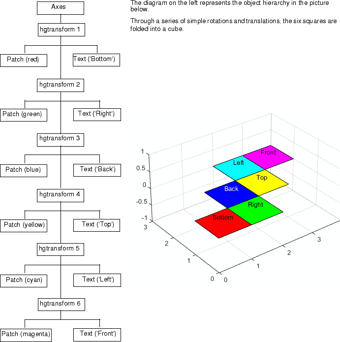

Nest Transforms for Complex Movements
This example creates a nested hierarchy of transform objects, which are then transformed in sequence to create a cube from six squares. The example illustrates how you can parent transform objects to other transform objects to create a hierarchy, and how transforming members of a hierarchy affects subordinate members.
Here is an illustration of the hierarchy.

The transform_foldbox function implements
the transform hierarchy. The doUpdate function
renders each step. Place both functions in a file named transform_foldbox.m and
execute transform_foldbox.
function transform_foldbox % Create six square and fold % them into a cube figure % Set axis limits and view axes('Projection','perspective',... 'XLim',[0 4],... 'YLim',[0 4],... 'ZLim',[0 3]) view(3); axis equal; grid on % Create a hierarchy of transform objects t(1) = hgtransform; t(2) = hgtransform('parent',t(1)); t(3) = hgtransform('parent',t(2)); t(4) = hgtransform('parent',t(3)); t(5) = hgtransform('parent',t(4)); t(6) = hgtransform('parent',t(5)); % Patch data X = [0 0 1 1]; Y = [0 1 1 0]; Z = [0 0 0 0]; % Text data Xtext = .5; Ytext = .5; Ztext = .15; % Corresponding pairs of objects (patch and text) % are parented into the object hierarchy p(1) = patch('FaceColor','red','Parent',t(1)); txt(1) = text('String','Bottom','Parent',t(1)); p(2) = patch('FaceColor','green','Parent',t(2)); txt(2) = text('String','Right','Parent',t(2)); p(3) = patch('FaceColor','blue','Parent',t(3)); txt(3) = text('String','Back','Color','white','Parent',t(3)); p(4) = patch('FaceColor','yellow','Parent',t(4)); txt(4) = text('String','Top','Parent',t(4)); p(5) = patch('FaceColor','cyan','Parent',t(5)); txt(5) = text('String','Left','Parent',t(5)); p(6) = patch('FaceColor','magenta','Parent',t(6)); txt(6) = text('String','Front','Parent',t(6)); % All the patch objects use the same x, y, and z data set(p,'XData',X,'YData',Y,'ZData',Z) % Set the position and alignment of the text objects set(txt,'Position',[Xtext Ytext Ztext],... 'HorizontalAlignment','center',... 'VerticalAlignment','middle') % Display the objects in their current location doUpdate(1) % Set up initial translation transforms % Translate 1 unit in x Tx = makehgtform('translate',[1 0 0]); % Translate 1 unit in y Ty = makehgtform('translate',[0 1 0]); % Translate the unit squares to the desired locations % The drawnow and pause commands display % the objects after each translation set(t(2),'Matrix',Tx); doUpdate(1) set(t(3),'Matrix',Ty); doUpdate(1) set(t(4),'Matrix',Tx); doUpdate(1) set(t(5),'Matrix',Ty); doUpdate(1) set(t(6),'Matrix',Tx); doUpdate(1) % Specify rotation angle (pi/2 radians = 90 degrees) fold = pi/2; % Rotate -y, translate x Ry = makehgtform('yrotate',-fold); RyTx = Tx*Ry; % Rotate x, translate y Rx = makehgtform('xrotate',fold); RxTy = Ty*Rx; % Set the transforms % Draw after each group transform and pause set(t(6),'Matrix',RyTx); doUpdate(1) set(t(5),'Matrix',RxTy); doUpdate(1) set(t(4),'Matrix',RyTx); doUpdate(1) set(t(3),'Matrix',RxTy); doUpdate(1) set(t(2),'Matrix',RyTx); doUpdate(1) end function doUpdate(delay) drawnow pause(delay) end